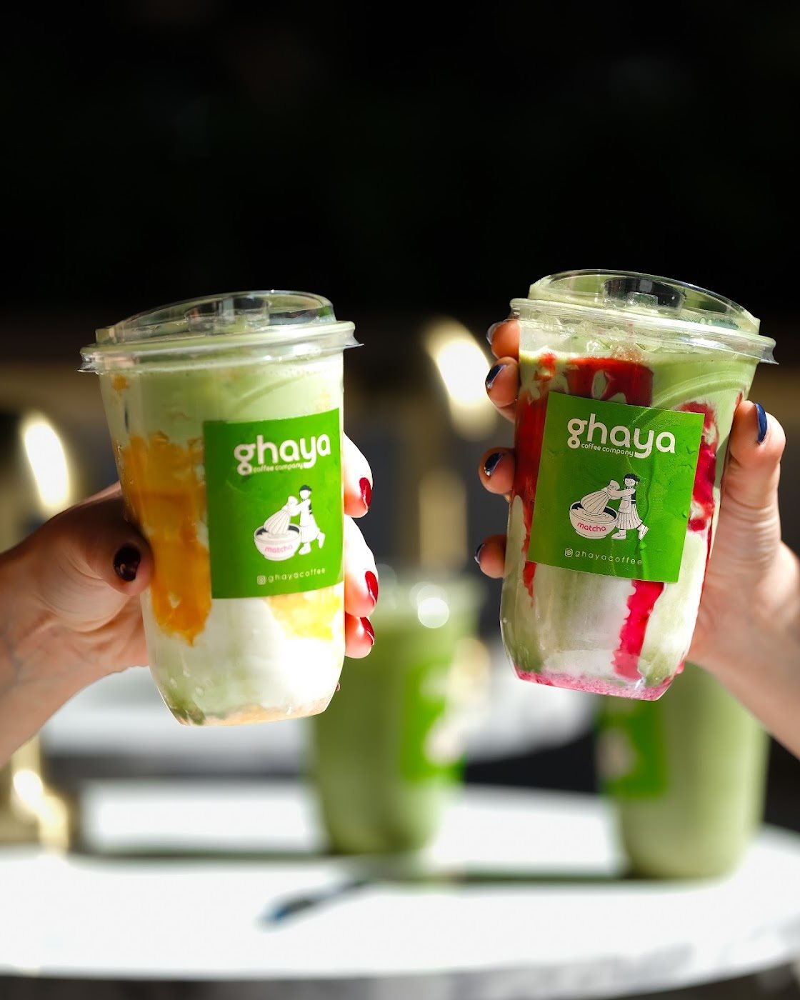
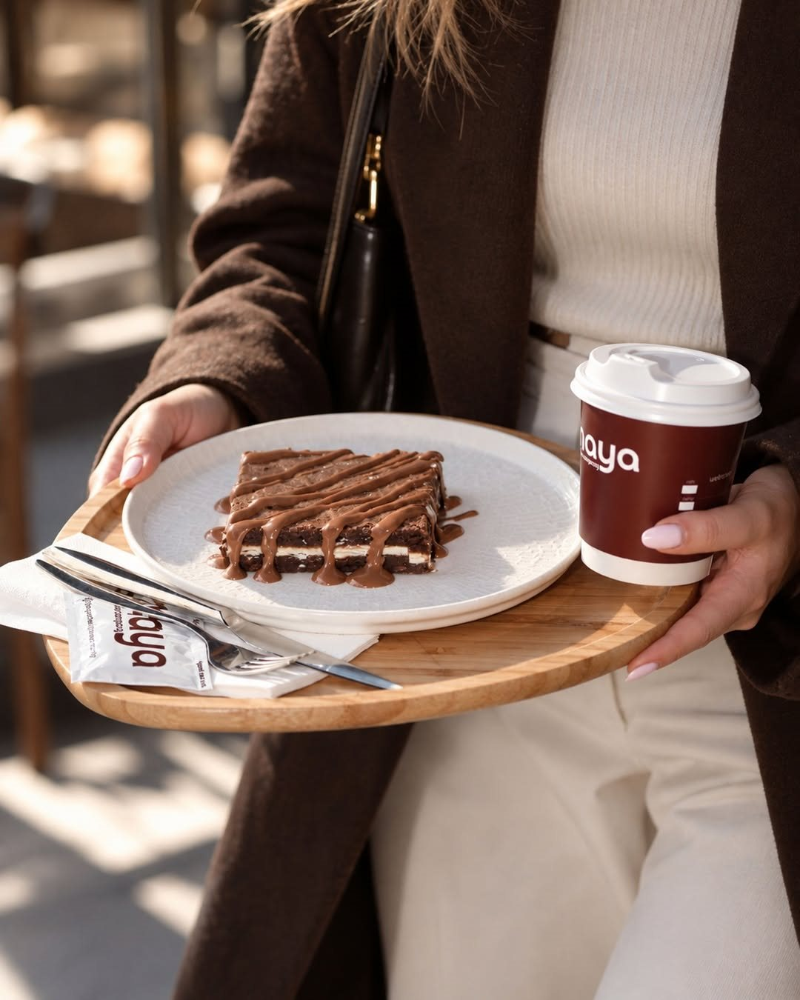
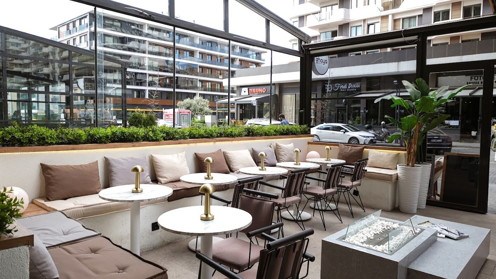

Roastbeef Panini
Kuru domates, roka, ricotta peyniri ve dana roastbeef.
Demir Country, Beylikdüzü
Sandviç, matcha ve tatlı. Güzel bir molaya ihtiyacınız varsa,
Ghaya’da buluşalım.


Biraz tatlı, biraz tuzlu

Kavaklı’da bir buluşma
Uzun bir sohbetin ya da kısa bir molanın adresi. Demir Country’de kahvenizi birlikte içelim.
Ghaya’ya yol tarifiGoogle yorumları
Brunch için sürekli tercih ettiğimiz bir mekân hâline geldi. Panini sandviçlerine bayılıyoruz. Özellikle roastbeef ve fig çok başarılı. Çalışanlar çok kibar. Teşekkür ederiz.
Kahveleri, tatlıları, her detayı gerçekten çok özenli ve inanılmaz lezzetli.
Kahvesi, çayı ve iki farklı kruvasan kahvaltısını denedik. Gerçekten taze ve lezzetli, biz çok memnun kaldık.
Yorumlardan kısa alıntılar. Yazım ve noktalama düzenlenmiştir.
Google’da inceleyinBir mesaj kadar yakın
Menü ve ziyaretinizle ilgili sorularınız için Instagram’dan yazabilirsiniz.
Instagram’dan yazın